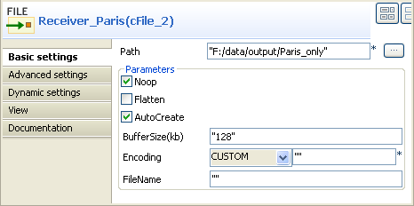

Famille de composant | Routing | |
Fonction | Le composant cMessageRouter route des messages dans différents canaux selon des conditions spécifiées. | |
Objectif | Le cMessageRouter créé différents canaux pour chaque type de message filtré, afin que les messages puissent ultérieurement être traités plus précisément dans chaque nouveau canal. | |
Utilisation | Le cMessageRouter est généralement utilisé comme composant intermédiaire dans une Route. Il ne peut avoir qu'un seul canal d'entrée mais plusieurs canaux de sortie. Les messages peuvent être écrits en sortie via des liens de type When, Otherwise ou Route. | |
Connections | Trigger / When | Sélectionnez le lien When et cliquez sur la vue Component. Dans la liste Type, sélectionnez le type de langage que vous utilisez pour déclarer votre condition. Dans le champ Condition, saisissez la condition à utiliser pour filtrer les messages. Tous les messages ne répondant pas à cette condition sont récupérées via le lien Otherwise dans un canal différent ou sont perdus s'il n'y a pas de lien Otherwise.
NoteIl peut y avoir plusieurs liens When dans une Route.
|
| Trigger / Otherwise | Ce lien récupère automatiquement les messages ne remplissant pas les conditions When. NoteIl ne peut y avoir qu'un lien Otherwise, facultatif, dans une Route. |
Limitation | Il n'est pas recommandé d'effectuer de gestion de message après un lien when ou otherwise. Utilisez toujours un endpoint Mock/Direct pour les remplacer et créez une nouvelle Route pour gérer les messages | |
Dans ce scénario, vous routez des messages XML envoyés de l'endpoint émetteur selon un critère défini : les fichiers XML dans lesquels la valeur du nœud city est Paris sont envoyés dans un dossier nommé Paris_only et les autres messages sont envoyés dans un dossier nommé Others_cities.

Parmi les quatre fichiers XML utilisés dans ce scénario, Message_1.xml et Message_4.xml contiennent le nom de la ville de Paris. Voici un exemple :
<person> <firstName>Pierre</firstName> <lastName>Dupont</lastName> <city>Paris</city> </person>
De la famille Messaging de la Palette, déposez trois composants cFile et quatre cMessagingEndpoint dans l'espace de modélisation graphique et nommez-les respectivement Sender, Receiver_Paris et Receiver_Others, pour les cFile, et directParis, directOthers, directParisRoute et directOthersRoute afin de mieux identifier leur rôle.
De la famille Routing, déposez un composant cMessageRouter dans l'espace de modélisation graphique et nommez-le Message_router.
De la famille Miscellaneous, déposez deux composants tLogRow dans l'espace de modélisation graphique et nommez-les Monitor_Paris et Monitor_Others, respectivement.
Cliquez-droit sur le composant cFile nommé Sender, sélectionnez Row > Route dans le menu contextuel et cliquez sur le composant cMessageRouter.
Cliquez-droit sur le cMessageRouter, sélectionnez Trigger > When dans le menu contextuel et cliquez sur le composant cMessagingEndpoint nommé directParis. Cet endpoint va récupérer les messages répondant au critère défini.
Cliquez-droit sur le composant cMessageRouter, sélectionnez Trigger > Otherwise dans le menu contextuel et cliquez sur le cMessagingEndpoint nommé directOther. Cet endpoint va collecter tous les messages ne répondant pas au critère de filtre.
Cliquez-droit sur le composant cMessagingEndpoint nommé directParis, sélectionnez Row > Route dans le menu contextuel et cliquez sur le cFile nommé Receiver_Paris. Répétez cette étape pour relier le composant Receiver_Paris au Monitor_Paris, le directOthersRoute au Receiver_Others et le Receiver_Others au Monitor_Others, à l'aide de liens Row > Route.
Le composant cMessageRouter ne possède pas de propriétés car il filtre et route les messages d'un endpoint aux autres selon les conditions définies dans les liens When.
Double-cliquez sur le composant cFile nommé Sender pour ouvrir sa vue Basic settings.

Dans le champ Path, spécifiez le chemin d'accès à la source du message.
Dans la liste Encoding, sélectionnez le type d'encodage de vos fichiers de messages. Laissez les autres paramètres tels qu'ils sont.
Dans l'espace de modélisation graphique, cliquez sur le lien When créé et cliquez sur la vue Component pour définir un filtre par rapport auquel les messages seront routés.

Dans la liste Type, sélectionnez xpath car le format des messages utilisés est XML.
Dans le champ Condition, saisissez
"/person[city='Paris']"pour récupérer uniquement les messages dans lesquels la valeur du nœud city est Paris.Double-cliquez sur le composant cMessagingEndpoint nommé directParis pour ouvrir sa vue Basic settings.

Dans le champ URI, saisissez l'URL de l'endpoint, par exemple "direct:Paris", afin de recevoir le message filtré.
Répétez ces étapes afin de configurer l'URI des composants cMessagingEndpoint. L'URL du composant directOthers est direct:Others, celle du directParisRoute est direct:Paris et celle du directOthersRoute est direct:Others.
Double-cliquez sur le composant cFile nommé Receiver_Paris pour ouvrir sa vue Component et spécifiez le chemin d'accès aux messages répondant au critère de filtre, dans le champ Path.
Répétez cette étape pour définir le chemin d'accès à tous les messages de l'émetteur dans le composant cFile nommé Receive_Other.
Double-cliquez sur le composant cLog nommé Monitor_Paris pour ouvrir sa vue Basic settings.

Dans la liste Level, sélectionnez INFO. Sélectionnez l'option Specify output log message et saisissez le code suivant dans le champ Message pour afficher le nom de fichier du message envoyé vers le répertoire spécifié.
Message sent to folder Paris_only: ${header.CamelFileNameOnly}Répétez cette étape pour personnaliser le message dans le composant cLog nommé Monitor_Others pour afficher les noms de fichiers du message vers le répertoire spécifié.
Appuyez sur Ctrl+S pour sauvegarder votre Route.
Cliquez sur l'onglet Code au bas de l'espace de modélisation graphique afin de visualiser le code généré.

Comme affiché dans le code, les messages sont routés selon des conditions initialisées par le morceau de code
.choice(), le filtre défini est initialisé par le morceau de code.when()et les messages non filtrés sont routés via le morceau de code.otherwise().Cliquez sur le bouton Run de la vue Run ou appuyez sur F6 pour exécuter votre Route.
Résultat : Les fichiers contenant “Paris”sont envoyés dans le dossier nommé Paris_only et les autres messages sont envoyés dans un dossier nommé Others_cities.